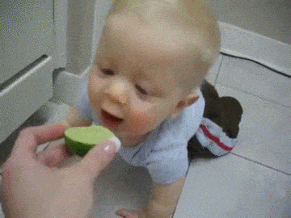
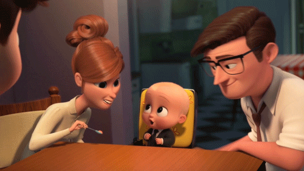
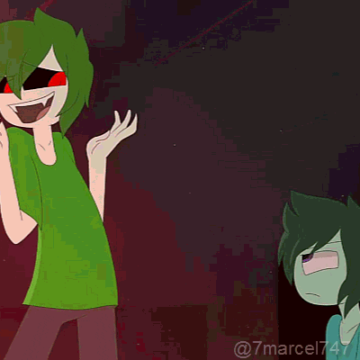
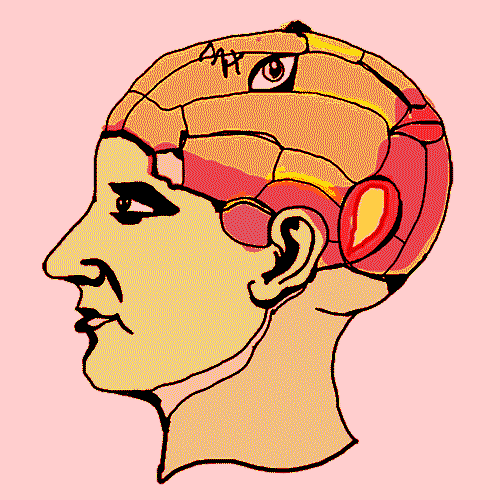

Teoría Psicosexual en la Personalidad
La manera de comportarse de una persona dependerá del modo en el que haya afrontado las
diferentes etapas de desarrollo psicosexual y los retos característicos de cada fase.

- Etapa oral:
La etapa oral ocupa aproximadamente los primeros 18 meses de vida, y en ella aparecen los primeros intentos por satisfacer las demandas promovidas por el ello.
En ella, la boca es la principal zona en la que se busca el placer.
También es la boca una de las principales zonas del cuerpo a la hora de explorar el entorno y sus elementos,
y esto explicaría la propensión de los más pequeños a intentar "morderlo" todo.
Si se impide tajantemente que los bebés utilicen su boca para satisfacerse,
esto podría producir un bloqueo que haría que ciertos problemas quedasen fijados en el inconsciente.

- Etapa Anal:
Esta etapa se produciría desde el fin de la etapa oral y hasta los 3 años de edad.
Se trata de la fase en la que se empiezan a controlar el esfínter en la defecación (aguantar las ganas de orinar).
Las fijaciones relacionadas con esta fase del desarrollo psicosexual tienen que ver con la acumulación y con el gasto,
vinculadas con el espíritu ahor
rador y la disciplina en el primer caso,
y con la desorganización y el derroche de recursos en el segundo.
Sin embargo, estas dinámicas de gasto y ahorro no se expresarían
solamente o principalmente a través de la gestión del dinero.

-
Etapa fálica
Esta fase pulsional duraría entre los 3 y los 6 años,
y su zona erógena asociada es la de los genitales.
De este modo, la principal sensación placentera sería la de orinar,
pero también se originaría en esta fase el inicio de la curiosidad por las diferencias entre hombres y mujeres,
niños y niñas, empezando por las evidentes disimilitudes en la forma de los genitales
y terminando en intereses, modos de ser y de vestir, etc.
Además, Freud relacionó esta fase con la aparición del "complejo de Edipo",
en el que los niños sienten atracción hacia la persona que ejerce el rol de padre/madre
y sienten celos y miedo hacia la persona que ejerce el rol de padre.

-
Etapa de latencia
Esta fase empieza hacia los 7 años y se extiende hasta el inicio de la pubertad.
La etapa de latencia se caracteriza por no tener una zona erógena concreta asociada
y, en general, por representar una congelación de las experimentaciones en materia de sexualidad por parte de los niños,
en parte a causa de todos los castigos y amonestaciones recibidas.
La etapa de latencia ha estado asociada a la aparición del pudor y la vergüenza relacionada con la sexualidad.

-
Etapa genital
La etapa genital aparece con la pubertad y se prolonga en adelante.
Está relacionada con los cambios físicos que acompañan a la adolescencia.
Además, en esta fase del desarrollo psicosexual el deseo relacionado con lo sexual
se vuelve tan intenso que no se puede reprimir con la misma eficacia que en etapas anteriores.
La zona erógena relacionada con este momento vital vuelve a ser la de los genitales,
pero a diferencia de lo que ocurre en la fase fálica, aquí ya se han desarrollado las competencias necesarias para expresar
la sexualidad a través de vínculos de unión de carácter más abstracto y simbólico que tienen que ver con el consenso y el apego con otras personas.
Es el nacimiento de la sexualidad adulta, en contraposición a otra ligada solo a las simples gratificaciones instantáneas y
obtenidas mediante actividades estereotípicas.
La teoría del desarrollo psicosexual puede llevar a producir cierto alarmismo si se piensa que una mal
gestión de la educación de los menores durante estas fases puede dejarles con traumas
y todo tipo de trastornos.